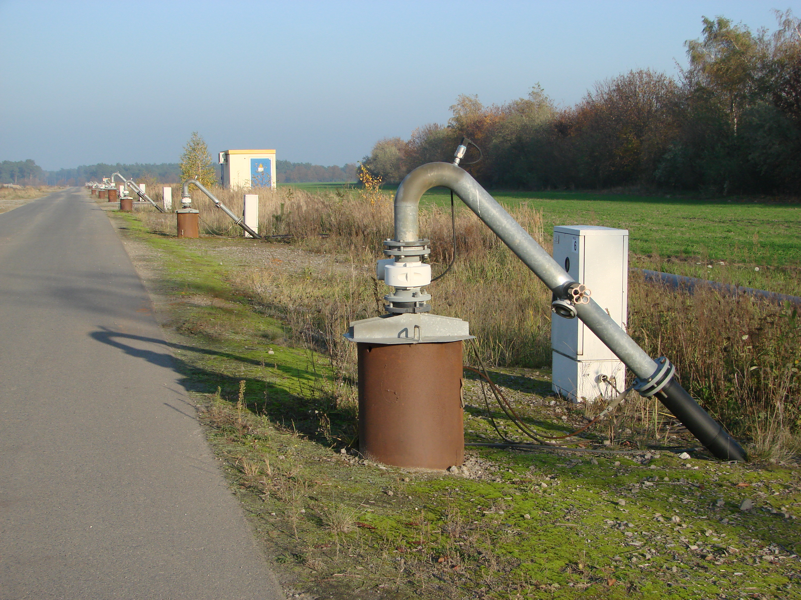

Tagebau Jänschwalde: Governance of Groundwater in the Context of Lignite Phase-out: A Case Study
Goal
The project explores governance arrangements related to groundwater management and environmental responsibility in the context of the Tagebau Jänschwalde lignite mining area in Eastern Germany. It identifies gaps in authority, accountability, and information access regarding the long-term impact of mining on local water bodies.
Methods
The analysis applies a governance assessment framework based on Ostrom's IAD model, stakeholder mapping, and institutional diagnostics. Desk research was combined with primary source interpretation and legal analysis of administrative responsibilities.
Skills & Competencies Developed
- Applied institutional analysis and multi-level governance frameworks.
- Mapped regulatory roles and formal-informal interactions in water governance.
- Strengthened qualitative research and public policy interpretation skills.
- Gained experience in environmental justice discourse and critical analysis of administrative procedures.